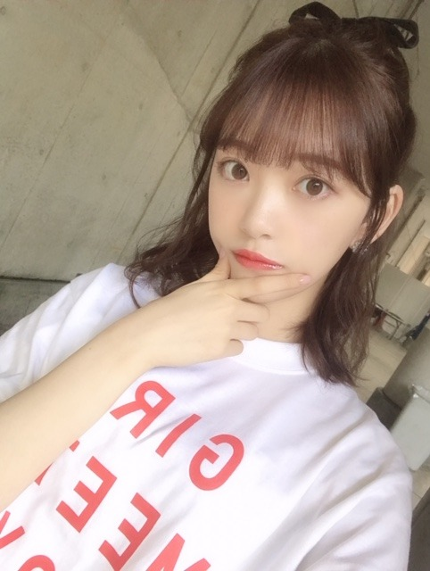
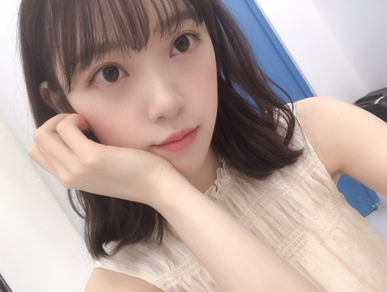

2019/0811Sunハーフアップブーム

最近ゆるハーフアップにハマってます☺︎
昨日の握手会で何人かにアイシャドウを聞かれたのですが、数日前から新しく買ったアイシャドウを愛用してます☺︎！
amplitudeの002ピンクベージュ
です！3ステップで大人かわいいツヤキラなまぶたになれます✨ナチュラルで綺麗な発色で、最近はずっとこれ！
口紅はstone brick 201チェリーレッドで大人っぽ赤に♡

下まぶたのラメは horika horika アイスパングルグリッターcandyparisです✨✨
さっそくWHOMEEのアイブロウパウダー使ってますが、ボルドー色を混ぜるだけで垢抜け眉になれてめちゃ良きでした！

ホットギミック tシャツ、オシャレ〜

ふふふ
告知です
14日 今週水曜日19:00〜
衝撃のアノ人に会ってみた！
に出ます☺︎
楽しい収録でした。みてね！

まだまだ、撮影頑張りますよ〜
夜ご飯なにかなぁ〜
お腹空いたなぁ
2019/08/11 17:12


コメント(281)
ありがとねー。
ハーフアップ超似合ってる。ていうか何でも似合ってるよね。
何でも似合うのは美人の証拠。綺麗です。
口紅赤が似合うのも美人の証拠。
番宣ありがとう。必ず見るよ。
それと神宮初日アリーナ当たりました！
近くで未央奈ちゃん見れるんで嬉しくてたまらない。
気合い入ってきたよ。
撮影もう終わったかな、お疲れー。
バーイ。
ブログ更新ありがとー！
握手会お疲れ様でした。
ハーフアップ
めっちゃ似合ってて素敵です！
握手会いきたかったなぁ…
あ、
個人的には花束をもってる髪型も好き！
なんて髪型なんだろう？
夜ご飯美味しいもん食べれた？
多忙な日々だとはおもいますが
美味しいもん食べて
休めるときはゆっくり休んで
日々のお仕事を頑張ってね！
今日も１日お疲れ様でした！
でわっ、また。ばいっっっ
撮影とか、ライブとか、握手会などなど忙しいとおもうけど、その分ファンは活躍を知ることができて嬉しいよ。さぁ大阪ドームだ。二階席からオレンジ×白の
サイリウム振るからね。ちなみに、片手二本持ちで行きますから。見つけたらレスお願いします。
未央奈忘れてないですか❓
更新頻度が多いのは嬉しいけどね
ほんとどんな髪型も似合ってて、かわいくて好き。
可愛すぎるますね
テレビちゃんと見ますから
体に気をつけて頑張って下さい！
楽しかったよー
ホットギミックの白Tシャツでペアルックになったり、戻ってくるときの素の未央奈を見れたり、いろんなお話できたりしてとても有意義な握手会でした！
次行けるのは、未央奈にとってラスト？の個別握手会かもしれない11月9日になるけど、最高の思い出にしたいと思ってるよ
何かして欲しいこととかあったらモバメかブログで教えて欲しいな
あ、昨日話した内容の一つなんだけど、17kg(イチナナキログラム)って言うファッションブランドがあって、未央奈に似合いそうな服が沢山あったから良かったら着て欲しいなって思ったんだ
9月のTGCにも出るらしくって、クリスティーが握手会でも着ているみたいだから、調べてみて欲しいな
しかも、プチプラ韓国レディースファッションって書いてあるから未央奈も好きそうかなって思ったんだけどどうかな？
原宿にお店も出したみたいだから、時間あったら覗いてみて
なんなら、そこのモデルまでやってみちゃったり？
長くなってしまったので、また次の時にコメントしまーす
いつも応援してるからね
P.S.
この前ホットギミック3回目観てきた!
観る度に演技の細かいところまで見れるようになって、やりたい事に物凄く頑張ってるって感じるから、大変だろうけど身体だけは壊さないようにして頑張ってね
土曜日は握手会、お疲れさまでした。髪型ならばまだしも、アイシャドウなどのメイクを変えたことに気づく人はすごいなあ、と尊敬します。
ピンクの花束を持っている堀さんの写真、一瞬すき焼きのお肉を持っているのかと思っちゃいました（ふふふ）。
ではまたコメントします。おやすみなさい。
さらばだ、また会おう！（気球に乗って去りぬ～）
未央奈はメイクが好きで詳しくて
自分でするメイクが凄く上手くて
いつ見ても綺麗だなーって思う。
今日撮影したものもいつか見られるのかな～
楽しみにしてるね！
14日の番組もワクワクしながら早速予約したよ。
撮影の後の夜ご飯で
未央奈が餃子を食べられていますように。笑
ブログ更新ありがとうございます。
それにしても、いつも「かわいい」いや「きれいな」未央奈の写真ありがとうございます。
「工事中」見ました。「アクション部」懐かしいですね。堀先生の模範演技、カッコ良かったです。
１４日の「衝撃のアノ人に会ってみた!」も楽しみにしたいと思います。
１４日と言えば、全国ツアー大阪１日目、台風が心配ですが、この日は大丈夫でしょう。１５日はかなり心配。いくらドームとはいえ、大型台風のようで‥‥。
気をつけてくださいね。ご盛会・ご活躍お祈りしております。
どの写真も美人さんで、ハーフアップもお似合いです。何だか2枚目の写真から猫らしさを感じます。
沢山の花、とても綺麗ですね。握手会って体力的にも精神的にも相当に消耗することをしてるんですよね。その上で握手した人達を元気にしてるんだから堀さんは本当に凄いです。
あと工事中見ました。アクション指導が見事でした。デリカシーのない奴には、親指をこうして左手上で肩幅ですね。
では、衝撃のアノ人に会ってみたも必ず見ますね。
ブログ更新ありがとう。
工事中見たよ。
前に側転練習してるって聞いたけどバク宙も練習してるんだ、バク宙できたらホントすごいよ！
格闘アクションも本格的だったよ、フック、アッパー、キック！カッコ良かった。
ライブで側転やってね(笑)ウソだよ。
かわいいショット見るとバク宙するなんて想像できないよ。
衝撃のあの人に会ってみた見るよ、楽しみ。
ではでは
ブログ更新ありがとうございます
ホットギミックＴシャツ、オシャレ✨
未央奈さん、とっても似合ってます✨
「ゆるハーフアップ」にハマっているのですね
「ゆる」には、何か意味があるのですか❓
答えていただきたいな☀
他の髪型もやってほしい…✴
「編み込みのカチューシャ」とか、未央奈さん
似合いそう
やってみてね☺
「衝撃のアノ人に会ってみた！」
絶対見ますね❗
リアルタイムで見るけど、録画しとくのです
メイク道具とか、色々参考になりました
次のブログ更新、待ってます
夕ご飯なんでした？
食べみおなですね！
メイクの変化に気づけない鈍感男子でございます。笑
メイクって難しい(>_<)
未央奈ちゃんが可愛いってことはわかるのでお許しを。
写真たくさんありがとう！
とにかく可愛い！
どんな未央奈ちゃんも可愛い！！
好きだー！！！(落ち着け 笑)
ではでは
今日も素敵な１日を。
握手会お疲れ様(´∀｀)
自分は行けなかったから、写真とても嬉しいよ(≧▽≦)
やっぱり、どんなヘアアレンジも未央奈ちゃんは似合うな(*´ω｀*)
髪型とか化粧品のことわかんないから、
ただ似合ってるよとしか言えないや。ゴメン！
いいよ、すごく！
ちょっと体調くずして吐き気がひどいから
今日はこの辺で…。
ブログ更新ありがとう
ブログの写真どれも素敵だけど、私は最後のが一番好きです。
京セラドームでのライブ準備の真最中かな？良い体調で最高のパフォーマンスを披露してくださいね。
乃木坂46と頑張ってるcuteでsmartな未央奈ちゃんを応援しています。
１２日横浜個別握手会行ったよー
ホットギミックTシャツ、可愛かったよー
未央奈、お疲れさま
未央奈、海好き？ ぜひ、青島へ
またね！！
あと、未央奈の前髪のセットの仕方も知りたいです！！
未央奈ちゃんの心境かわいい
テレビ見るね
ハーフアップも良いですね～、良いですね～ (^^♪
出来ますれば、色んな角度からの写真も見たいです。
お願い出来ますか？ (≧◇≦)
...横顔、後ろ姿、上目遣いなどなど、どんな感じ
なんだろう...
未央奈さんのゆるハーフアップ、個人的に一番好きな髪型です✨
ハーフアップかつドレスでアクションしてるシーンを想像したら、自分の中ではギャップでかなりいい感じになりました。笑
ドレスで闘う未央奈さん、いつか見れるのを楽しみにしてます✨
家族で観ます♪☆
乃木坂工事中、僕は見たよ。録画して見ました。みおなちゃん、めっちゃかわいかったよ。アクション指導、見事でしたよ。
１枚目の写メのみおなちゃん、めっちゃかわいいです。
みおなちゃん、体調に気をつけて仕事頑張ってね。
またコメントするね。
“さらば愛しきアウトロー“を観てきたよ
“運び屋(クリントイーストウッド)“みたいな内容で、感動な作品かと思ったら、クソ銀行詐欺師男の話しだった(^^)そんな男に惚れる女も可哀想だったけど..
“永遠に僕のもの“って作品も面白そう(^^)天使のような綺麗な顔をした男が、悪魔みたいな犯罪者になっていく作品らしい(´Д｀)楽しみおな＼(^o^)／
チャァオ～～!☆彡
みおちゃん、ごめんねぇ❕笑顔・・・
今前ブログ「あっという間」に
コメント書いて送ってしまったよぉ❕❤️❤️❤️❤️❤️笑顔
シミ対策の話しだけど、載ってたら見てねぇ❕❤️❤️❤️❤️❤️笑顔
またねぇ❕❤️❤️❤️❤️❤️笑顔
☆大人しい、おすまし！より☆彡
暑い毎日・・・
元気に過ごしてるかな❓️(笑)
ブログもありがとう❗️❗️(笑)
かわいい、みおなちゃん❗️❗️(笑)⤴️⤴️⤴️
この間の、パシフィコ横浜の時のビジュアルかな❓️
会いに行けなかった僕としては、本当にありがたい・・・
部によって、ヘアスタイルなり、衣装なり、結構変えてくれてたんだね❗️❗️
きっと休む時間も、キチンと取れなかっただろうに・・・
でも、そうしてでも、ファンの方々に、いろんな自分を見てもらいたい、という一心からなのかな・・・
相手のことを第一に考えてくれるみおな・・・
グループ内での、自分の立ち位置が変わっても、決して傲らずに、そのスタイルは崩さない・・・
考え方、行動、本当に立派だと思う❗️❗️
自分より相手のために何かしてあげたい、と言うみおなの言葉は嘘じゃない・・・
みおなは本当に、尽くすことに喜びを見いだすタイプ・・・
そういう子は、きっと幸せになれるよ・・・
今回のオトナミオナ・・・（←このキャッチフレーズ、懐かしいね❗️(笑)）
個人的には、やっぱり４枚目のみおなが、メッチャメチャタイプ❗️❗️(笑)⤴️⤴️⤴️
みおなを見つけてから、3度目の夏・・・
京セラドーム、楽しみにしています❗️❗️(笑)
それじゃ、またね❗️❗️(笑)
コメントする